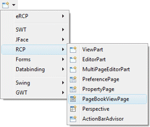
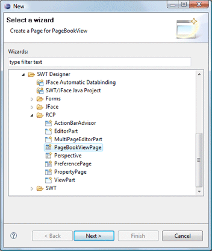
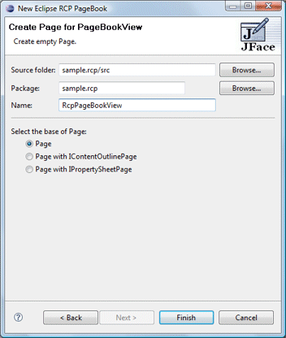
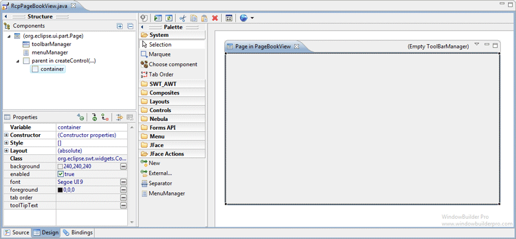

|
Subclasses of the RCP Page class can be
created using the RCP PageBookViewPage wizard. The wizard can be
selected from the drop down wizard menu or from the
Eclipse New wizard.
To use the wizard, select the project source folder and package to contain the class. Then enter the class name, view name/title and hit the Finish button. |
|
  |
|
When editing RCP Pages, all of the standard SWT layouts, containers and widgets are available. When editing Pages, SWT Designer adds a new Palette category, JFace Actions, for defining actions and assigning them to the view's toolbar and menu.  New actions may be created using the New command, and existing actions may be added using the External command. New actions are created as inner classes of the current class and are automatically added to the palette for easy access. Any existing actions may be deleted using the Delete key. Selecting an action allows you to edit its icons, label and tool tip text within the property pane. The view's toolbar is live and actions may be dropped on it. Actions and separators may be dragged from the palette and dropped on the toolbar. Toolbar actions may be rearranged using drag/drop and deleted using the Delete key. The view's menu is also live and actions may be dropped on it. Actions, separators and menu managers may be dragged from the palette and dropped into the menu. Menus may be rearranged using drag/drop and deleted using the Delete key. |